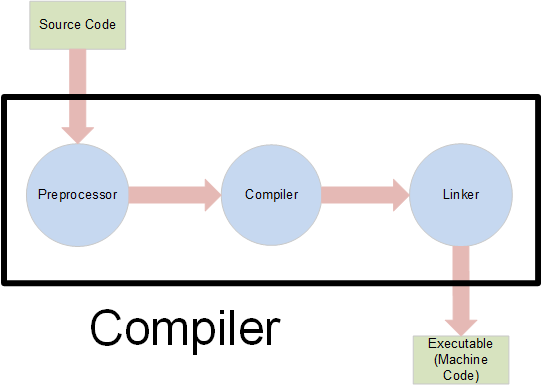

1979: Erste Implementierung von C with Classes
1985: The C++ Programming Language, 1st edition
1998: C++98 (ISO/IEC 14882:1998)
2003: C++03 (ISO/IEC 14882:2003)
2011: C++11 (ISO/IEC 14882:2011)
ab 2011: Modern C++
(und alle 3j neuer Standard)
#include <iostream>
int main() {
std::cout << "Hallo Welt!\n";
}

GCC - GNU Compiler Collection (MinGW für Windows)
Clang - C++ Frontend für LLVM
(Emscripten: JavaScript-Backend für LLVM, d.h. ermöglicht C++ zu JavaScript)
Visual Studio
Ein Programm besteht aus mehreren Quelldateien/Libraries
Diese werden durch die Makefile gebündelt
Moderne Variante: CMake
Kann Makefile erzeugen
Aber auch Projektdateien für IDEs (z.B. Visual Studio) oder andere Build-Systeme (z.B. Ninja)
cmake_minimum_required (VERSION 2.6)
project (HelloWorld)
add_executable(HelloWorld main.cpp)
Dynamisch gelinkt
Statisch gelinkt
Header only
Scope = Gültigkeitsbereich
Variablen haben einen Scope
Funktionen haben eine Scope
Namespaces / Klassen / Template-Paramerter u.a. auch
#include <iostream>
#include <string>
std::string say_hello() {
return "Hallo Welt!";
}
int main() {
std::cout << say_hello() << std::endl;
}
#include <iostream>
#include <string>
std::string say_hello(); // Prototyp, steht meistens im Header
int main() {
std::cout << say_hello() << std::endl;
}
std::string say_hello() {
return "Hallo Welt!";
}
Verhindern mehrfaches einbinden
#pragma once // KEIN Standard C++
#ifndef _MYHEADER_H_
#define _MYHEADER_H_
// Eigentlicher Header Inhalt
#endif
Kapseln Funktionen/Klassen/Variablen/...
Angenommen Library A
und Library B
werden eingebunden,
beide haben Klasse string
.
Löst Compiler-Fehler aus, wenn die nicht in einem eigenem Namespace liegen.
Im Header:
namespace lib_a {
// Definition von Klasse string
}
Zugriff ausserhalb des Namespace-Scope:
lib_a::string var;
#include <iostream>
#include <string>
#include "lib_a_string.h"
using namespace std;
string say_hello(); // Prototyp, steht meistens im Header
int main() {
lib_a::string var;
cout << say_hello() << endl;
}
string say_hello() { return "Hallo Welt!"; }
int zahl; // Achtung: Ohne definierten Anfangswert!!!
int i = 0; // Variablentyp Variablename evtl. Zuweisung
int &j = i; // Referenz auf i
int *k = &i; // Pointer auf i
Unbestimmt: void
Boolean: bool
Ganzzahlige: char, short, int, long, long long, jeweils signed und unsigned
Gleitkomma: float, double, long double
Weiterhin: Klassen, Struct, Enumerations, Unions
Man kann auch eigene definieren mit typedef bzw. using
using int_pointer = int *;
int_pointer p_var = &i;
#define NULL 0
void mache_was(int *pi);
void mache_was(int i);
int main() {
int *pi = NULL;
mache_was(pi); // Falsche Funktion wird aufgerufen
int *pj = nullptr;
mache_was(pj); // Richtige Funktion wird aufgerufen
}
Datentyp kann auch dynamisch vom Kompiler zugewiesen werden
auto p_var = &i;
Datentypen sollten schon passen
short s = 5;
long l = static_cast<long>(s);
static_cast: Benutzt implizite bzw. Benutzer-definierte Umwandlungen
dynamic_cast: Konvertiert Pointer/Referenzen von Klassen innerhalb der Vererbungshierarchie
reinterpret_cast: Reinterpretiert den unterliegenden Datentypen
const_cast: const entfernen/hinzufügen
#include <iostream>
#define ALLES_OK 1
int addieren(int &ergebnis, int lhs, int rhs) {
ergebnis = lhs + rhs;
return ALLES_OK;
}
int main() {
int ergebnis;
if (addieren(ergebnis, 23, 19) == ALLES_OK) {
std::cout << "Ergebnis: " << ergebnis << std::endl;
}
}
int addieren(int lhs, int rhs) {
if (lhs == rhs) {
throw std::runtime_error("besser multiplizieren");
}
return lhs + rhs;
}
int main() {
try {
int ergebnis = addieren(42, 42);
} catch (const std::exception &e) {
std::cout << "Fehler: " << e.what() << std::endl;
}
}
constexpr: Auswertung beim kompilieren
inline: Compiler versucht sie in den Code einzubauen
constexpr int factorial(int n) {
return n <= 1? 1 : (n * factorial(n - 1));
}
template <typename T>
T addieren(T lhs, T rhs) {
return lhs + rhs;
}
int main() {
int i = addieren(3, 3);
float f = addieren(1.0f, 2.0f);
}
template <typename T>
T addieren(T rhs) {
return rhs;
}
template <typename T, typename... Ts>
T addieren(T lhs, Ts... rhs) {
return lhs + addieren(rhs...);
}
int main() {
int i = addieren(1, 2, 3, 4, 5);
float f = addieren(1.0f, 2.0f, 3.0f);
}
int main() {
int ergebnis, lhs = 3, rhs = 6;
auto addieren = [=, &ergebnis](int third) {
ergebnis = lhs + rhs + third;
return true;
};
bool alles_ok = addieren(11);
}
strecke operator "" _km(int);
strecke operator "" _m(int);
int main() {
strecke weg = 12_km;
strecke anderer_weg = 12_km + 300_m;
}
enum class laengen_einheit : short {
zentimeter,
meter,
kilometer = 100
};
class strecke {
int laenge = 0;
laengen_einheit einheit = laengen_einheit::meter;
public:
strecke(int l, laengen_einheit e) : laenge(l), einheit(e) {}
strecke(int l) : strecke(l, laengen_einheit::meter) {}
~strecke() {} // Destruktor
strecke &operator+(const strecke &rhs);
};
struct: default public, sonst gleich
strecke &strecke::operator+(const strecke &rhs) {
assert(einheit == rhs.einheit);
laenge += rhs.laenge;
return *this;
}
int main() {
strecke weg1(0);
strecke weg2 = strecke(8, laengen_einheit::kilometer);
strecke *weg3 = new strecke(15, laengen_einheit::meter);
delete weg3; // Wichtig, sonst memory leak!!!
}
int main() {
strecke weg1(0);
weg1.laufen();
strecke *weg2 = new strecke(15, laengen_einheit::meter);
weg2->laufen();
delete weg2;
weg2->laufen(); // Boom, Speicherverletzung!!!
}
Es wird belegter Speicher nicht wieder freigegeben
Zum Beispiel wenn der Ausführungspfad unvorhergesehen ist (durch Exception)
Pointer wird benutzt, nachdem Speicher freigegeben wurde
Gibt allokierten Speicher im Destruktor automatisch frei
Kann nicht kopiert werden
auto int_pointer = std::make_unique<int>(3);
auto weg = std::make_unique<strecke>(3, laengen_einheit::meter);
weg->laufen();
Zählt intern, wieviele Objekte den Speicher referenzieren
Gibt Speicher erst frei, wenn der Zähler 0 wird
auto weg1 = std::make_shared<strecke>(3, laengen_einheit::meter);
auto weg2 = weg1;
std::cout << weg2.use_count() << std::endl; // ist 2
if(condition) {
// ...
} else {
// ...
}
int i = condition
? 1 // condition ist wahr
: 2; // condition ist false
switch (condition) {
case laengen_einheit::kilometer:
case laengen_einheit::meter:
// ...
break;
case laengen_einheit::zentimeter:
// ...
break;
default:
// ...
break;
}
while (condition) {
// ...
}
do {
// ...
} while(condition);
for(int i = 0; i<10; i++) {
// ...
}
// Range based for loop
for(const auto &item : items) {
// ...
}
array: festes zusammenhängendes Array
vector: dynamische zusammenhängendes Array
deque: double ended queue
list: doppelt verkettete Liste
set: collection of unique keys, sorted by keys
map: collection of key-value pairs, sorted by keys, keys are unique
multiset: collection of keys, sorted by keys
multimap: collection of key-value pairs, sorted by keys
Gibts auch alle noch mal als Hash-Variante (unordered_set usw.)
#include <array>
int main() {
std::array<int, 3> a1{1, 2, 3}; // Initializer list
int i = a1.at(0); // Wirft exception wenn index falsch
int j = a1[0];
a1[2] = 5;
}
#include <iostream>
#include <vector>
int main() {
std::vector<int> v = {7, 5, 16, 8};
v.push_back(25); // Add two more integers to vector
v.push_back(13);
for (int n : v) {
std::cout << n << '\n';
}
}
#include <set>
#include <string>
int main() {
std::set<std::string> a;
a.insert("cat");
a.insert("dog");
a.insert("horse");
a.find("cat");
a.count("dog");
}
#include <map>
#include <string>
int main() {
std::map<std::string, int> map1;
map1["something"] = 69;
map1["anything"] = 199;
map1["that thing"] = 50;
}
Indirekter Zugriff auf Container
STL Algorithmen arbeiten auf Iteratoren
#include <iostream>
#include <vector>
#include <algorithm>
#include <iterator>
int main() {
std::vector<int> v{1, 2, 3};
std::fill_n(std::back_inserter(v), 3, -1);
for (int n : v)
std::cout << n << ' ';
}
Nicht modifizierende: count, find, search, ...
Modifizierende: copy, copy_if, fill, reverse, rotate, ...
Sortieren: is_sorted, sort, partial_sort, ...
Und noch viele andere
#include <algorithm>
#include <iostream>
#include <vector>
#include <iterator>
int main() {
std::vector<int> from_vector{1, 2, 3};
std::vector<int> to_vector;
std::copy(from_vector.begin(), from_vector.end(),
std::back_inserter(to_vector));
}